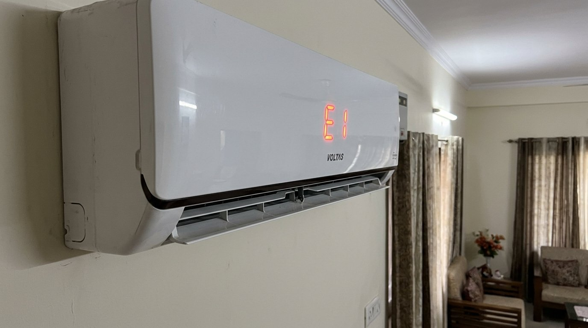
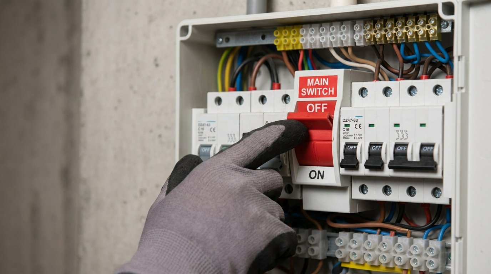
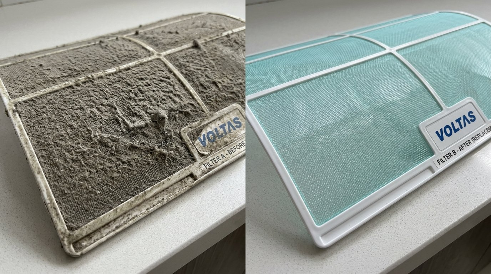
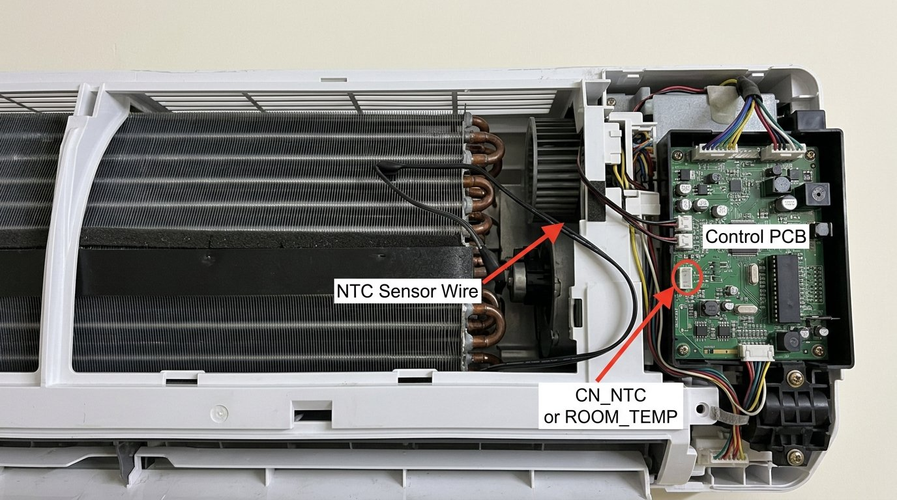

Your Voltas AC just flashed E1 on the display and stopped cooling right in the middle of a scorching afternoon. Before you reach for your phone to call the service centre, work through these steps — the vast majority of people sort this out themselves in under 15 minutes.
What Is the E1 Error?
The E1 error on a Voltas split AC means the indoor unit's room temperature sensor has either stopped communicating or is reading an abnormal value. Think of it as the AC's thermometer going haywire — the unit doesn't trust the temperature reading, so it shuts down rather than run blind.
This sensor is a small NTC thermistor, usually tucked near the return air intake on the indoor unit. The good news is — this is almost always fixable at home.

Why Does This Happen?
Dirty or clogged air filter
When your AC filter is choked with dust — and in Indian homes during summer, it gets choked fast — airflow over the sensor gets restricted. The sensor then reads a wildly inaccurate temperature and throws the E1 code. This is the single most common cause, and it's completely preventable with a monthly rinse.
Loose or disconnected sensor wire
The temperature sensor connects to the main PCB inside the indoor unit via a small plug-in connector. Vibration from the blower motor or a rough installation can work this connector loose over time. When the connection is intermittent, the unit panics and displays E1.
Power fluctuation or voltage surge
India's grid is unforgiving — sudden voltage spikes during load-shedding restoration, or sharp drops during peak summer demand, can confuse the AC's control board. Sometimes what looks like a sensor error is actually the PCB recovering from a power jolt. A hard reset clears it.
Faulty or aging sensor
If your unit is more than three or four years old and has never had the sensor checked, the thermistor itself may have drifted out of range. Sensors degrade slowly, and the error often starts appearing only on the hottest days when the AC is working hardest.
How to Fix the E1 Error — Step by Step
Follow these in order — stop as soon as the error clears. Most people are done by Step 2.
Turn the AC off using the remote, then walk to your switchboard and flip the AC's dedicated MCB or switch off entirely. Leave it off for a full 5 minutes — not 30 seconds, a full 5 minutes. Switch it back on and see if the error has cleared.
A surprising number of E1 errors after a power cut or voltage spike clear up with just this one step.

Switch the unit off at the switchboard before doing this — not just on the remote. Open the front panel of the indoor unit, slide out the mesh filters, and take them to your bathroom.
- Rinse the filters under running water until the water runs clear.
- Let them dry completely — a damp filter back in the unit can cause condensation issues.
- Slide them back in firmly and close the front panel.
If you're doing this in the middle of summer and haven't cleaned the filter in a couple of months, you'll probably find it caked with a thick layer of grey dust — that's almost certainly your culprit. Give the filters a proper wash, not just a shake.

For this step, open the front panel again and look inside the indoor unit — you're not going deep into the electronics, just looking at the accessible area near the PCB (usually on the right side).
- Look for a small white or grey wire, about the thickness of a headphone cable, with a tiny plastic plug at the end.
- This is the NTC sensor wire that connects to the CN_NTC or ROOM_TEMP socket on the control board.
- Make sure the plug is firmly seated in its socket on the board. If it looks like it's pulled slightly out, press it in gently until it clicks.
- Put the panel back and power up.

If you notice frost or ice on the copper pipes or the indoor unit's evaporator coil, your AC has been running with restricted airflow — possibly because of the dirty filter you just cleaned.
- Switch the unit to fan-only mode for 20–30 minutes to let the ice melt completely.
- Place a towel under the unit to catch drips.
- Only switch to cooling mode after you're sure there's no more ice.
Running it in cooling mode while iced up will keep triggering errors.
After the reset and the filter clean, run the AC at 26°C in a moderate fan speed for 10 minutes. Don't blast it at 16°C and maximum fan immediately — give the sensor a chance to stabilise. If it runs without the E1 code for those 10 minutes, you're sorted.
When You Should Call a Service Engineer
If you've done all five steps and the E1 error keeps coming back, the sensor itself has likely failed and needs replacing. Here's when to make the call:
- The error returns within minutes of clearing, even after a full filter clean and reset.
- The sensor wire connector is fine but the error persists every time you run the AC in cooling mode.
- Your unit is under warranty (1 or 5 years depending on your model) — log a service request with Voltas and the repair will be covered at no cost.
A replacement NTC thermistor for a Voltas unit costs roughly ₹200–₹400. The full repair including part and labour usually comes to ₹500–₹900. Don't let anyone tell you the entire PCB needs replacing unless they've actually tested the sensor resistance values with a multimeter first.
Quick Recap
| Fix | Difficulty | Time Needed |
|---|---|---|
| Hard reset via MCB (5 minutes off) | Very Easy | 5–6 minutes |
| Clean the air filter | Very Easy | 10–15 minutes |
| Check NTC sensor wire connector | Easy | 5 minutes |
| Melt ice in fan-only mode | Easy | 20–30 minutes |
| Test at 26°C moderate fan | Very Easy | 10 minutes |
The E1 error looks alarming when you're staring at it in 42-degree heat, but it's almost never a serious mechanical failure. The filter clean and the sensor wire check clear this error 8 out of 10 times, and neither requires any tools. If you've been through every step and it's still flashing, the part that needs swapping is inexpensive and any Voltas service engineer will have it sorted on the same visit.